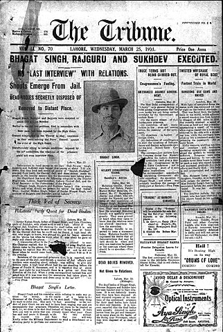

Early Life
Bhagat Singh was born on September 27, 1907, in the village of Banga
near Lyallpur district in Punjab, British India. He was an Indian
freedom fighter who is considered to be one of the most influential
revolutionaries of the Indian independence movement. Bhagat Singh joined
the Hindustan Republican Association (HRA) at a young age and became
involved in revolutionary activities. He participated in several acts of
sabotage against British institutions, including an attempt to bomb the
Central Legislative Assembly in Delhi. In 1929, he and two other
activists were convicted of assassinating John Saunders, a British
police officer. Singh was executed by hanging on March 23, 1931, at
Lahore jail at the age of 23. Despite his short life, Bhagat Singh left
a lasting legacy in the struggle for Indian independence. He is revered
by many as a martyr and symbol of resistance to British colonialism in
India. His example continues to inspire new generations of activists
worldwide.
Why is it Important to read Bhagat Singh's Biography?
Bhagat Singh's life is an inspiration to all those who fight for justice
and against oppression. He was a brave young man who dedicated his life
to the struggle for Indian independence. His story is a reminder that
even in the face of great adversity, it is possible to achieve victory.
Bhagat Singh's biography provides insight into the mind of a
revolutionary and offers encouragement to those who are fighting for
change today. It is an important read for anyone interested in history,
politics, or human rights activism. He was loved and respected by the
people of India, who continue to honor his memory. Bhagat Singh's life
was cut short at a young age, but he left behind an enduring legacy that
continues to inspire new generations around the world today. His story
is unforgettable for anyone interested in history or human rights
activism. He fought against oppression with all his might until his
death at 23 years old, leaving behind a lasting impact on Indian society
during its struggle for independence from British rule. Bhagat Singh
Biography provides valuable insight into the mind of a revolutionary
leader whose passion will live forever in history books worldwide. It
belongs on every bookshelf next to biographies of other influential
figures such as Mahatma Gandhi and Nelson Mandela. The importance of
reading Bhagat Singh's biography cannot be overstated.
How did Bhagat Singh influence the Indian Independence
Movement?
Bhagat Singh had a great impact on the Indian independence movement due
to his participation in various activities that led India towards its
freedom from colonial rule. His involvement with revolutionary groups
resulted in him being jailed for various crimes, but he continued his
activism even behind bars through writing and publishing newspapers
aimed at spreading nationalist sentiments among people all over India.
He was executed by hanging when he was 23 years old after leading an
unsuccessful plot to kill a British police officer who ordered a lathi
charge on Lala Lajpat Rai, who was protesting colonial policies at the
time. This murder had a major impact on Indian society and brought
Bhagat Singh to national attention as a revolutionary hero of India's
independence movement. What is included in Bhagat Singh's biography?
Bhagat Singh's biography covers his upbringing in Punjab, his
involvement with revolutionary groups throughout his teenage years, and
the significant impact he had on India's struggle for independence. It
details his trial when he was charged with the murder of John P.
Saunders, a British police officer, as well as his life in prison
leading up to his execution at Lahore jail when he was 23 years old.
Throughout it all, Bhagat Singh remained strong in defense of Indian
independence even in the face of great adversity. How is Bhagat Singh's
Biography useful? Bhagat Singh's biography is both informative and
entertaining to read; full of events that shaped him into becoming an
influential figure during India's push for independence from British
rule. While it is useful for researchers and historians, anyone
interested in politics or Indian history can benefit from reading an
in-depth account of the life of a revolutionary icon whose passion lives
on through his legacy and impact on India's independence movement.

Reactions to the executions: The
Tribune news report of Sardar Bhagat Singh's execution,1931. The
executions were reported widely by the press, especially as they took
place on the eve of the annual convention of the Congress party at
Karachi. Gandhi faced black flag demonstrations by angry youths who
shouted "Down with Gandhi". The New York Times reported: A reign of
terror in the city of Cawnpore in the United Provinces and an attack on
Mahatma Gandhi by a youth outside Karachi were among the answers of the
Indian extremists today to the hanging of Bhagat Singh and two
fellow-assassins. Hartals and strikes of mourning were called. The
Congress party, during the Karachi session, declared: While dissociating
itself from and disapproving of political violence in any shape or form,
this Congress places on record its admiration of the bravery and
sacrifice of Bhagat Singh, Sukh Dev and Raj Guru and mourns with their
bereaved families the loss of these lives. The Congress is of the
opinion that their triple execution was an act of wanton vengeance and a
deliberate flouting of the unanimous demand of the nation for
commutation. This Congress is further of the opinion that the [British]
Government lost a golden opportunity for promoting good-will between the
two nations, admittedly held to be crucial at this juncture, and for
winning over to methods of peace a party which, driven to despair,
resorts to political violence. In the issue of Young India of 29 March
1931, Gandhi wrote: Bhagat Singh and his two associates have been
hanged. The Congress made many attempts to save their lives and the
Government entertained many hopes of it, but all has been in a vain.
Bhagat Singh did not wish to live. He refused to apologise, or even file
an appeal. Bhagat Singh was not a devotee of non-violence, but he did
not subscribe to the religion of violence. He took to violence due to
helplessness and to defend his homeland. In his last letter, Bhagat
Singh wrote, " I have been arrested while waging a war. For me there can
be no gallows. Put me into the mouth of a cannon and blow me off." These
heroes had conquered the fear of death. Let us bow to them a thousand
times for their heroism. But we should not imitate their act. In our
land of millions of destitute and crippled people, if we take to the
practice of seeking justice through murder, there will be a terrifying
situation. Our poor people will become victims of our atrocities. By
making a dharma of violence, we shall be reaping the fruit of our own
actions. Hence, though we praise the courage of these brave men, we
should never countenance their activities. Our dharma is to swallow our
anger, abide by the discipline of non-violence and carry out our duty.